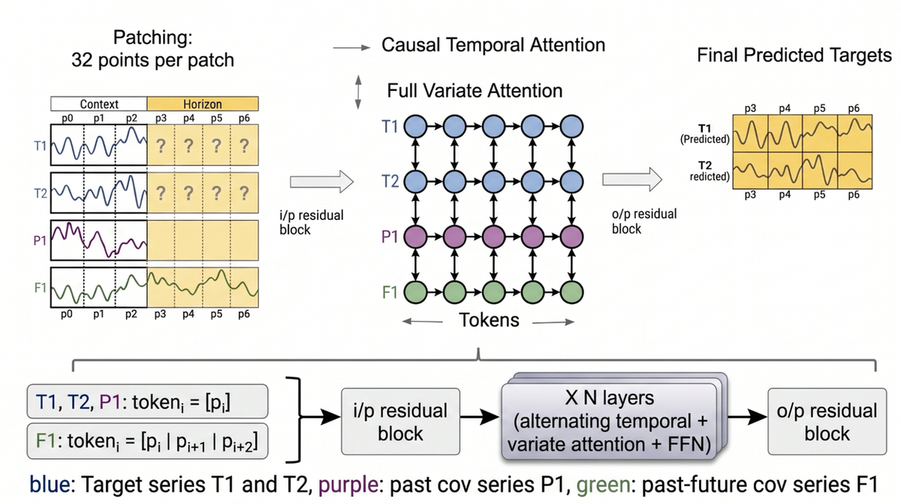
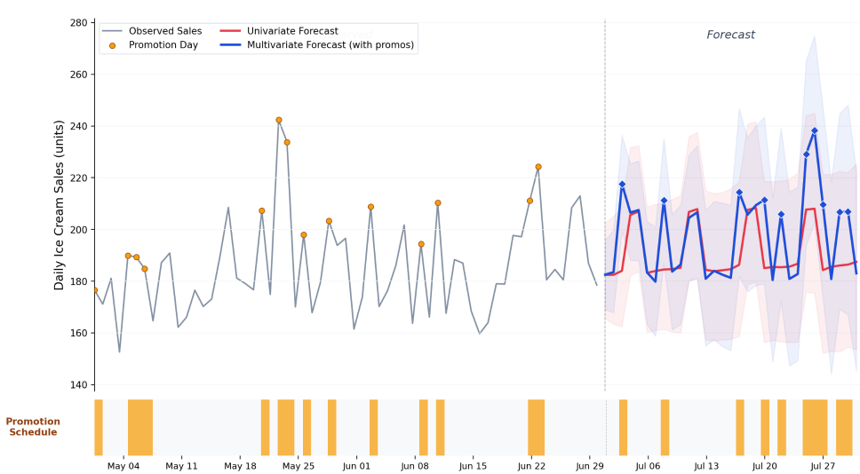
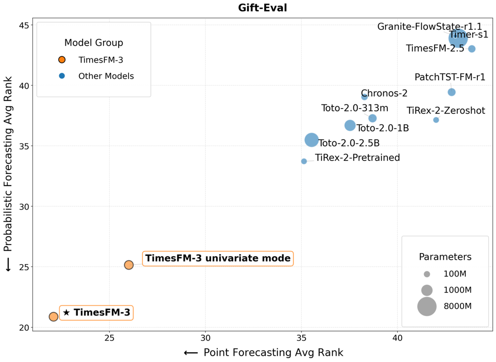
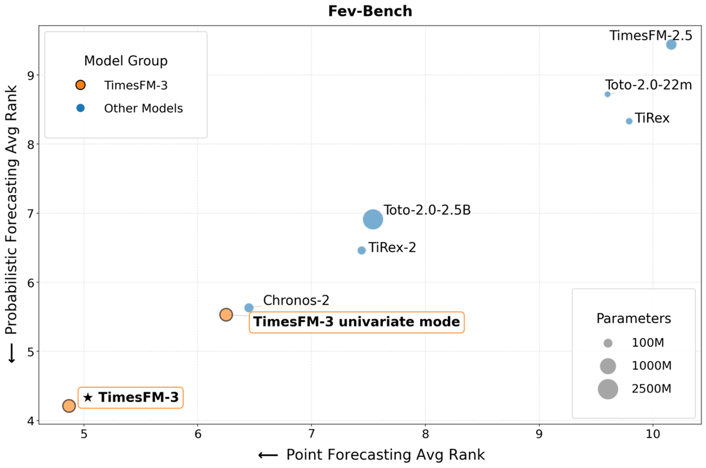
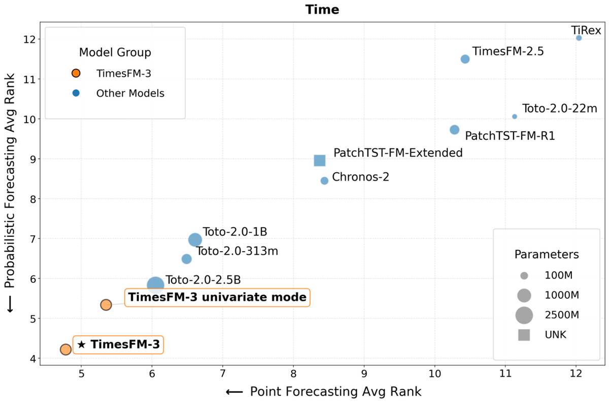

Google Research 发布 TimesFM-3——下一代多变量时间序列基础模型，单次前向实现高精度多变量预测，在主要基准上显著超过其它预测模型。
作者：Ayush Jain 与 Rajat Sen（Google Research Research Scientists）。模型 330M 参数，在超 1 万亿时间点 的真实+合成语料上预训练。
自 2024 年 TimesFM 后，时序基础模型在零售、金融、可观测性、制造、医疗、自然科学等领域被广泛采用。

但直到 TimesFM-2.5（2025.9），模型严格限定单变量预测——只用单条时间序列的历史。而真实世界预测本质是多变量：多条序列与外部特征共同影响某序列的未来。
以预测冰淇淋销售为例：仅看过去销量远不够——好的预测还要参考关联产品销量（蛋筒、糖浆）、历史客流、以及已知未来事件（天气预报、促销、假日）。
TimesFM-3 正是为补齐这缺口而生：原生多变量零样本预测。
TimesFM-3 沿用前代纯 decoder-only transformer，把连续数据点按 32 步的 patch 分组处理；按 TimesFM-2.5 方式逐序列归一化，适应尺度差异巨大的时序。
多变量 token 构造：target 与 past-covariate 序列，一个 patch 直接构造一个 token；但对 past-future covariates，TimesFM-3 用「lookahead」策略——每个 token 把当前 patch 与未来 patch 拼接，让模型「瞥见」即将到来的已知信号。
交替注意力架构：token 化后过输入残差块、进入作为 2D 网格运行的 transformer 栈：
① 因果时序注意力：token 水平跨时间互注意，严格因果（只可看自己序列内的过去 token）防数据泄漏。
② 全变量注意力：token 垂直跨序列互注意——任一时间步可看数据集所有其它序列，学习复杂跨序列相关（如某序列的促销如何影响另一序列销量）。
两种注意力交替多层，无缝融合时序模式与跨序列关系（见 fig01）。
此前 TimesFM 逐 patch 生成预测——引入延迟、误差累积与计算成本。
TimesFM-3 用 Contiguous Patch Masking（连续补丁掩码）在单次前向生成整个预测视界：模型在观测上下文旁追加未来视界的掩码占位 token。
target 与 past-covariate 序列在视界内被掩码（其未来值未知），而 past-future covariates 保持可见，为模型提供假日/定时活动等已知未来信号。
经交替注意力层，模型同时填充所有掩码视界 patch，无需迭代循环。对每个 target 序列、每个视界步预测 9 个分位数（10th–90th），给出预测不确定性的完整概率视图。
回到冰淇淋销售例子：假设你在做下月促销计划、要预测销量。

标准单变量模型（下红线）只看历史销量、把周模式前推——但它不知道具体日期的计划促销。
TimesFM-3 多变量模式（蓝线）不同：把计划促销安排作为 past-future covariate 传入，从历史上下文学到「促销↔销量提升」的关系，再把该知识应用到未来有促销的日子。
结果是：每个促销日预测约 20% 销量提升（见图 2）——琥珀色块标出促销日，蓝线对每个促销响应，红线则完全无视。整月累计，这带来更准确的预计营收。
在三个综合公共基准评估：Gift-Eval、FEV-Bench、Time（TIME leaderboard）。三基准上 TimesFM-3 都是点预测与概率预测指标双维度的 top-rank（所有预训练基础模型）。
对比对象包括多变量能力模型（Chronos-2、Toto 2.0 家族）以及前代 TimesFM-2.5。
每个图含 TimesFM-3 两个 entry：单变量模式（无任何 covariate/跨序列信息，各 target 独立，如传统单变量模型）——即便在这个模式，TimesFM-3 已匹配或超过其它竞品；切到完整多变量模式，TimesFM-3 再跃一级，点与概率预测平均排名双双最佳。
图 3-5 分别展示 Gift-Eval（点+概率）、FEV-Bench（多变量数据集）、Time（推理效率对比）上的表现。

Gift-Eval（图 3）：TimesFM-3 单变量模式已排第一梯队，多变量模式进一步拉开差距。

FEV-Bench（图 4）：跨多变量数据集的点与概率预测精度，TimesFM-3 平均排名最佳。

Time（图 5）：跨预测视界的推理速度与效率，非自回归单次前向带来显著延迟优势。
参考：https://research.google/blog/timesfm-3-a-zero-shot-foundation-model-for-multivariate-forecasting/